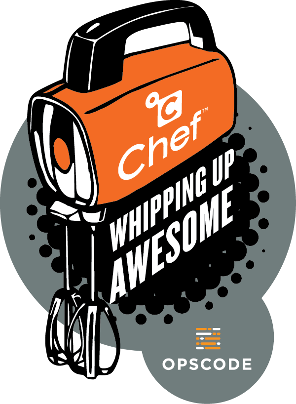

Chef in Practice
 The Introduction to Chef showed information about Chef and creating a first cookbook.
Here we are going to look at a few things to think about while doing your Chef development.
Advanced Practices with Chef
After creating a few cookbooks you'll find you want increased functionality (Handlers) or more robust resources.
- LWRPs
- A great 3-part tutorial on LWRPs from Doug Ireton.
- Handlers
Pay attention to your Chef server key files
They are not to be shared and the Organization ones you don't want to regenerate except in a disaster recovery situation.
Ideally, the only "user" with write access to your Organization is going to be your Continuous Integration (CI) server. Upon testing and validation the change to a cookbook, the CI server will do the the knife cookbook upload xyz command for you.
What is a Chef server Organization?
A way to group and isolate cookbooks needed for a project or app. A Chef server Organization has its own security key files and cookbooks. The combination of the Organization key file and your user key files allows authorizes your interaction with the Chef server's APIs (upload cookbook, register client machine, etc).
NEVER PUT A CHEF KEY IN TO SOURCE CONTROL!
In your .gitingore file add a line with .chef
Don't store secrets in plain text either
Speaking of keeping secrets out of source control - you'd never put your SSL cert in source control.
How to handle secret server config values you need to get on to the server but cannot put in to source control?
Data bags - think of them as name/value pairs you upload to the server and they're available to the Chef clients when needed w/o being stored in the cookbook that everyone can see. BUT!!! Data bags are stored in clear text and viewable on the Chef server web interface.
Encrypted data bags - just like regular data bags, but require an extra file that is the key to lock and unlock the data back contents. Like mentioned above, the SSL cert needs to be in an encrypted data bag.
Encrypted data bags are not the only method to store secrets for Chef cookbooks. Please read Secrets Management and Chef by Noah Kantrowitz. A top notch summary of available options for managing secrets in Chef cookbooks and when the strengths of one is better than the other.
Workout
We are going to complete the following actions
- Create a data bag.
- Use data bag value in cookbook
- Converge the node with Test Kitchen
kitchen converge